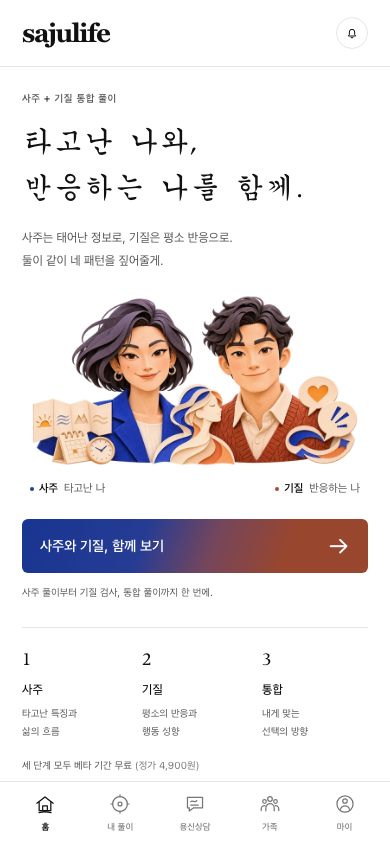
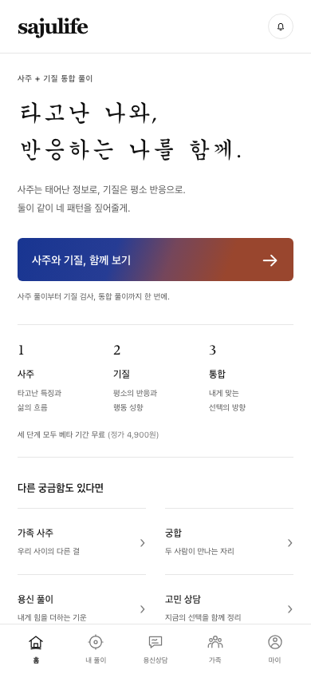

대표 결정대로 흰 바탕과 검정 궁서체 유지.

누가 말하는지 보이는 첫 홈. 반말과 두 역할이 연결됩니다.

시작 버튼과 다른 풀이가 먼저 보이는 간결한 홈.

로그인 전 궁서 화면은 고정. 로그인 후 홈의 문구·버튼·기능은 같게 두고 이미지 유무만 비교했습니다.
대표 결정대로 흰 바탕과 검정 궁서체 유지.
누가 말하는지 보이는 첫 홈. 반말과 두 역할이 연결됩니다.

시작 버튼과 다른 풀이가 먼저 보이는 간결한 홈.
